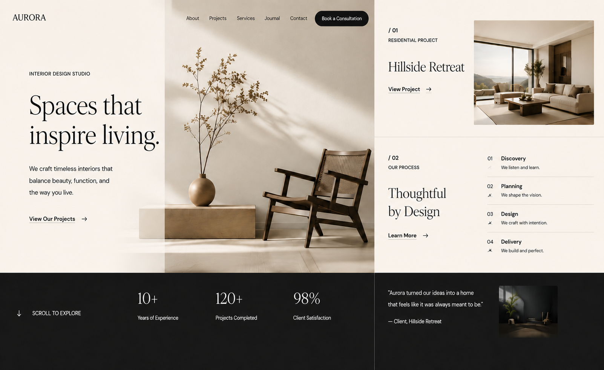

Independent web design & development
Turn your service
into a website
that drives action.
From positioning and content structure to visual design and front-end development, I build landing pages, sales pages, and custom web systems from start to finish.
View selected work01 / What I do
I make the interface look good and make the message, experience, and path to conversion clear.
A website should help visitors quickly understand who you are, what problem you solve, and what they should do next.
02 / Selected work
Let the work speak.
A selection of websites showing practical design outcomes across different types of projects.


03 / Services
From a focused landing page to a website system built to last.
Choose the right scope based on your business goals and day-to-day operations.
Company Website
Build a credible company presence with clear services, brand information, contact paths, and SEO foundations.
Landing Page
Focus on one product or service so visitors can understand its value, leave their details, or book.
Sales Page & Funnel
Connect traffic, trust, forms, and follow-up so marketing leads to measurable action.
Custom Web System
Plan booking, registration, orders, data collection, and admin workflows around your operations.
04 / Use cases
Help customers recognize: this is exactly what I need.
Turn manual, scattered, repetitive work into a smoother online flow.
QR Code Ordering
Paper menus and manual confirmation are slow and prone to transcription errors.
Let customers order by phone, centralize orders, and reduce repeated confirmation.
Online Booking & Time Slots
Bookings are scattered across messages, calls, and different communication channels.
Let customers choose a service and time while keeping requests and contact details together.
Registration & Lead Collection
Registration data is scattered, making course value and follow-up difficult to track.
Use a landing page, forms, and an admin system to create a trackable registration path.
Inquiry Funnel
Ads bring traffic, but there is no clear conversion or follow-up path.
Connect service details, proof, qualification forms, and follow-up in one path.

Responsive Design
Stable reading and interaction across phones, tablets, and desktops.
SEO Foundations
Page titles, descriptions, sharing metadata, and basic search readability.
Forms & Lead Capture
Collect requirements and support follow-up, qualification, and project management.
Analytics & Conversion Events
Leave room for GA, Meta Pixel, and other tracking integrations.
06 / Process
A clear process from the first idea to launch.
- 01
Discovery
Confirm goals, audience, content, features, and budget range.
- 02
Scope & Proposal
Define the information architecture, page scope, and deliverables.
- 03
Design & Development
Set the visual direction and build responsive pages and interactions.
- 04
Testing & Launch
Check devices, speed, forms, and tracking before publishing.

07 / A clear delivery
Trust comes from making every step clear, not from slogans.
01“I understand what this website needs to solve and what happens next.”
02“Services, workflows, forms, and the admin system work as one complete experience.”
03“The interface feels polished, but more importantly, it supports real growth and operations.”
08 / Start a project
Have a website or system in mind? Tell me what you need.
You do not need a complete specification to begin. Describe the problem, your goal, and your preferred launch timing, and I will help shape it into an actionable plan.
hello@twoin.tw